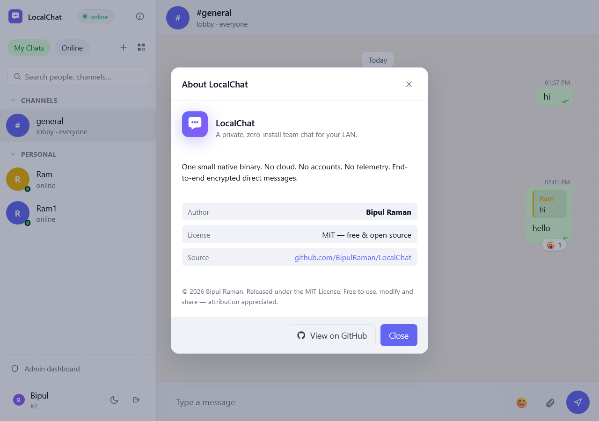
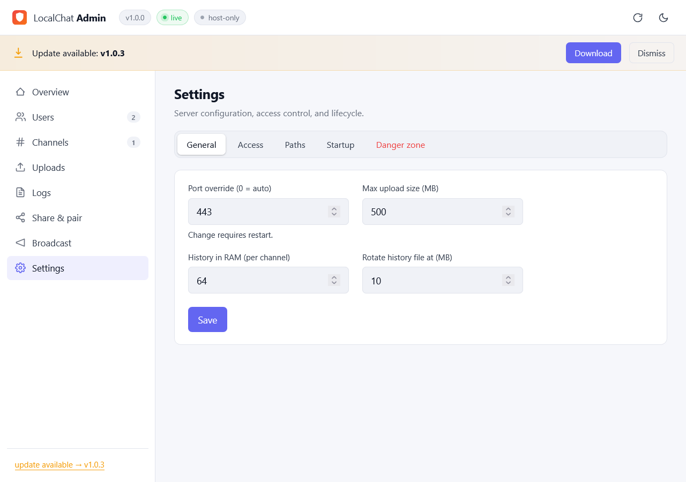

💬
Channels
Public, private, and a lobby. Create, invite, join, leave.
One ~5 MB binary. No accounts. No cloud. No telemetry. Double-click. Share the LAN URL. Done.

Slack and Teams need internet, accounts, and SaaS pricing. IRC needs a server admin and config files. Discord owns your data. LocalChat is for offices, classrooms, hackathons, homelabs, secure facilities, factory floors, ships, planes, and anywhere people share a network but not necessarily the internet.
Drop LocalChat.exe on a desktop. Double-click. That's the whole setup.
Zero outbound traffic. Works on a router with no WAN connection at all.
Pick a name, you're in. Identity is bound to a per-browser key — usernames can't be impersonated.
The host process literally cannot read direct messages — keys never leave the browser.
Channels, members, history, reactions and uploads survive restarts. One tiny SQLite file.
~5 MB on disk, ~5 MB RAM at 200 users / 50 channels. Boring infra should be fast.
Public, private, and a lobby. Create, invite, join, leave.
True end-to-end encryption — keys live only in the browser.
Direct peer-to-peer between users on the LAN.
Drag & drop with image previews and a built-in lightbox.
Quote any message. React with any emoji.
Typing indicators, read receipts, online status — all the niceties.
Live metrics, kick/ban, broadcast, and runtime settings.
Polished, mobile-friendly UI that looks great on any screen.
Survives sleep, Wi-Fi roams, and momentary network blips.
Not a single outbound request. Verify it with Wireshark.
Memory-safe, fast, and tiny. Boring infrastructure done right.
Move the data folder anywhere. Override with LOCALCHAT_HOME.
A clean, familiar chat surface — plus a real admin dashboard built in from day one.
The chat experience: channels, DMs, reactions, replies, file previews, mentions, presence.

The admin dashboard: live metrics, user moderation, broadcasts, file management, and runtime settings.
Grab LocalChat.exe from the latest release.
A tray icon appears; the host's browser opens automatically.
Click through Windows Firewall — Private network is enough.
Read it from the tray tooltip — e.g. https://192.168.1.42:5000 — and share it with anyone on the same Wi-Fi.
They open the URL, pick a name, and they're in. No install, no signup, no account.
The first visit shows a browser warning because the cert is self-signed. Click Advanced → Proceed. To use a real cert, see app/scripts/.
Hacking on the internals? Check the design doc for the full architecture — concurrency model, persistence layout, E2EE protocol, wire spec, and a file-by-file map of the codebase.
# clone & build $ git clone https://github.com/BipulRaman/LocalChat $ cd LocalChat/app $ cargo run --release # tray + browser auto-open $ cargo build --release --features tray # target/release/localchat.exe # release $ git tag v2.0.0 && git push origin v2.0.0 # CI publishes LocalChat.exe
No. LocalChat runs entirely on your LAN. It makes zero outbound requests and is happy on a router with no WAN. Perfect for air-gapped or restricted networks.
In a single folder you pick on first launch (default C:\LocalChat): a SQLite file, an uploads/ directory, a self-signed cert, rolling logs, and config.json. Move it, back it up, or delete it — that's all of it.
The first time you open the page, your browser generates a keypair and stores it locally. Your username is bound to that key, so even on an open LAN, nobody can impersonate you.
Yes. Direct messages are encrypted in the browser using per-conversation keys. The host process never sees plaintext — it just relays opaque blobs and stores them in the database.
Today: a single LocalChat.exe for Windows (the host) plus any modern browser (the clients — Windows, macOS, Linux, iOS, Android). macOS and Linux tray builds are on the roadmap.
Peer-to-peer over WebRTC, mediated by the LocalChat server only for signaling. Media never leaves the LAN.
Comfortably to ~200 users and ~50 channels using about 5 MB of RAM. It's a single Rust process designed to be boring and reliable, not infinitely scalable.
Yes. MIT licensed — do anything you want; attribution appreciated.
One double-click. One LAN URL. Your team is online.